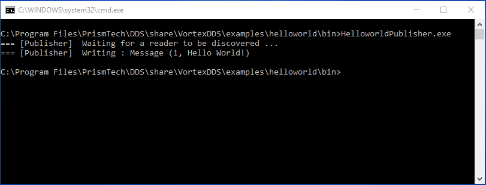

Installing Eclipse Cyclone DDS
System requirements
At the time of writing, Eclipse Cyclone DDS is known to run on Linux, macOS and Windows. The build-process is not yet able to generate native packages.
Linux and macOS
Post install steps
The installation package installs examples in system directories. In order to have a better user experience when building the Eclipse Cyclone DDS examples, it is advised to copy the examples to a user-defined location. This is to be able to build the examples natively and experiment with the example source code.
For this, the installation package provides the vdds_install_examples script, located in /usr/bin.
Create an user writable directory where the examples should go. Navigate to that directory and execute the script. Answer ‘yes’ to the questions and the examples will be installed in the current location.
Type vdds_install_examples -h for more information.
Paths
To be able to run Eclipse Cyclone DDS executables, the required libraries (like libddsc.so) need to be available to the executables. Normally, these are installed in system default locations and it works out-of-the-box. However, if they are not installed in those locations, it is possible that the library search path has to be changed. This can be achieved by executing the command:
export LD_LIBRARY_PATH=<install_dir>/lib:$LD_LIBRARY_PATH
Windows
Paths
To be able to run Eclipse Cyclone DDS executables, the required libraries (like ddsc.dll) need to be available to the executables. Normally, these are installed in system default locations and it works out-of-the-box. However, if they are not installed on those locations, it is possible that the library search path has to be changed. This can be achieved by executing the command:
set PATH=<install_dir>/bin;%PATH%
Test your installation
Eclipse Cyclone DDS includes a simple Hello World! application which can be run in order to test your installation. The Hello World! application consists of two executables: a so called HelloworldPublisher and a HelloworldSubscriber.
To run the example application, please open two console windows and navigate to the appropriate directory in both console windows. Run the HelloworldSubscriber in one of the console windows by the typing following command:
- Windows
HelloworldSubscriber.exe- Linux
./HelloworldSubscriber
and the HelloworldPublisher in the other console window by typing:
- Windows
HelloworldPublisher.exe- Linux
./HelloworldPublisher
The output HelloworldPublisher should look like
while the HelloworldSubscriber will be looking like this

For more information on how to build this application your own and the code which has been used, please have a look at the Hello World! chapter.